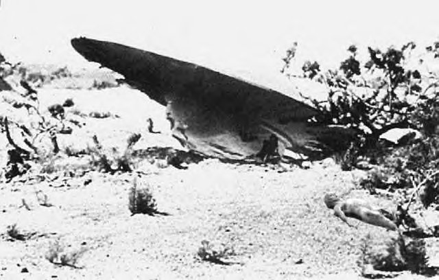
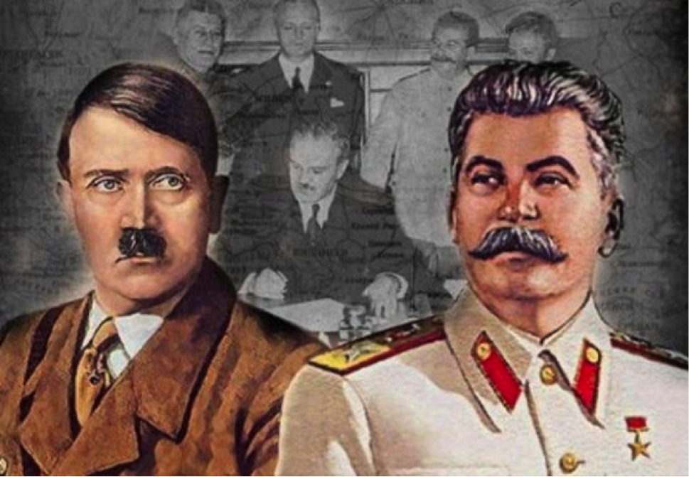

Roswell adalah sebuah kota di Chaves County di tenggara New Mexico, AS. Jumlah penduduknya 45.199, terbesar kelima di New Mexico. Kota ini merupakan pusat pertanian, susu, ranching, distribusi, dan produksi minyak bumi. Selain itu Roswell juga memiliki New Mexico Military Institute (NMMI), didirikan pada 1891. Bitter Lake National Wildlife Refuge terletak di timur laut kota ini. Pada tahun 1930-an, Roswell adalah tempat percobaan roket Robert Goddard. Roswell juga kota kelahiran aktris Demi Moore, musisi John Denver, dan joki Mike E. Smith. Pemain golf Nancy Lopez dibesarkan di sini, walaupun lahir di California. Astronot Edgar Mitchell, orang keenam di bulan, bersekolah di sini. Roswell paling terkenal karena insiden UFO Roswell tahun 1947, walaupun tempat jatuhnya terletak 75 mil dari Roswell, dan lebih dekat ke Corona. Namun penyelidikannya dilakukan oleh Roswell Army Air Field. Roswell terletak di 33° 23' 14" N, 104° 31' 41" W (33.387160, -104.528116)[1]. Menurut badan sensus AS, kota ini memiliki luas 75,0 km², dengan 75,0 km² darat dan 0,1 km² air.
Awal mula rosswell
Pada 70 tahun lalu, terdengar desas-desus sebuah piring terbang jatuh di padang pasir dekat Roswell, New Mexico, Amerika Serikat.Diduga ditemukan empat alien tewas. Insiden itu kemudian dikenal dengan teori konspirasi Roswell. Heather Wade, seorang pembawa acara radio Midnight in the Desert, mengklaim memiliki sebuah dokumen penting dari US Defense Intelligence Agency (DIA). Isi dokumen berlabel 'ultra top secret' itu rupanya berkaitan dengan dugaan jatuhnya pesawat UFO yang berisi alien. Termasuk, misteri Roswell Dikutip dari Express.co.uk pada Minggu (18/6/2017), Wade mengklaim ia mendapatkan dokumen itu dari sumber sahih. Perempuan itu lantas memberikan temuannya kepada ahli nuklir Stanton Friedman, yang mempercayai teori Roswell.Padang pasir Roswell menjadi terkenal sebagai pusat UFO semenjak Juli 1947. Saat itu, militer AS secara sensasional mengumumkan dalam sebuah rilis media bahwa mereka menemukan sisa piring terbang alien yang jatuh di kawasan tersebut. Namun, sehari kemudian rilis itu dicabut. Mereka menyatakan puing itu berasal dari balon udara Angkatan Udara AS yang jatuh.Namun, para saksi mata mengatakan, mereka melihat tubuh alien di antara puing-puing pesawat itu. Mereka juga melihat bangkai benda tersebut dibawa ke markas rahasia pangkalan militer AS. Dokumen yang dimiliki Wade berjumlah 47 halaman dan tak bertanggal. Termasuk 6 halaman tentang insiden Roswell.Dokumen itu secara detail mengungkapkan bagaimana sebuah UFO jatuh pada 2 atau 3 Juli 1947. Juga, tertulis empat tubuh alien yang hancur ditemukan dua mil dari bangkai pesawat dua minggu kemudian.
Dokumen itu mengonfirmasi bahwa militer AS memang membuat rilis media tentang UFO itu tanpa persetujuan pejabat senior di Pentagon. Mereka kemudian menarik dan membuat fabrikasi isu soal "balon udara".Laporan dalam dokumen itu menulis, "Pengintaian udara menemukan bahwa empat makhluk mirip manusia kecil rupanya telah dikeluarkan dari pesawat pada titik tertentu sebelum meledak. "Benda telah jatuh ke Bumi setidaknya dua mil sebelah timur lokasi kecelakaan di mana reruntuhan itu berada."Semua dari keempat anggota awak asing tewas dan tubuh mereka telah terdekomposisi." Dalam dokumen itu menyebut mayat dan 327 potongan individu dari kecelakaan UFO dibawa ke pangkalan Angkatan Udara Wright Patterson di Dayton, Ohio.Banyak orang ragu dan menuduh dokumen tersebut adalah sebuah tipuan yang rumit, diproduksi untuk memperpanjang teori konspirasi Roswell.Namun, sebuah pernyataan di situs web midnightinthedesert.com mengatakan: "Heather Wade menerima dokumen tadi malam dari sumber terpercaya. "Dia segera menyuruh Stanton Friedman melihat dokumen-dokumen yang mengatakan, 'Saya belum pernah melihat yang seperti ini.'""Stanton Friedman akan terus memeriksa dokumen ini untuk keasliannya, tapi saat ini kami tidak menemukan bukti pemalsuan." Paradigm Research Group (PRG) dibentuk untuk melobi Pemerintah AS untuk mengakhiri dugaan embargo kebenaran yang mencakup keberadaan alien di Bumi.Dokumen itu menggambarkan dokumen itu penting, namun mereka bisa saja palsu.Kelompok PRG merilis sebuah pernyataan yang mengatakan: "Selama beberapa minggu mendatang, PRG akan bekerja sama dengan periset terkemuka ke dalam sejarah embargo kebenaran dan dokumen pemerintah terkait ET untuk menentukan kualitas bukti ini."
Stalin dan Hitler
Teori tak hanya melibatkan mahluk luar angkasa, juga dugaan bahwa manusialah yang memicu insiden itu. Dua 'penjahat' besar dalam sejarah, diktator Uni Soviet Joseph Stalin dan Bos Nazi Jerman Dr Josef Mengele juga pernah disebut-sebut ada di balik insiden Roswell.Dalam buku berjudul "Area 51", sang pengarang Annie Jacobsen mengklaim apa yang ia tulis berdasarkan wawancara ilmuwan dan insinyur yang bekerja di Area 51 --lokasi penelitian AS di Gurun Nevada. Ia menolak keterkaitan insiden Roswell dengan alien dan mengajukan teori bahwa Stalin, yang terinspirasi oleh sandiwara radio terkenal yang disampaikan Orsin Welles. Drama yang diadaptasi dari novel tenar karya HG Wells berjudul "The War of the Worlds" atau "Perang Semesta" disampaikan seakan sebuah berita kontemporer. Itu menyulut histeria di Amerika Serikat pada 1938.Menurut buku tersebut, plot dimulai setelah Uni Soviet menyita jet bersayap tunggal Horten Ho 229 dari Jerman --yang disebut para penerbang sebagai pendahulu pesawat pembom siluman B-2.
Lalu, Mengele mulai masuk ke dalam cerita ini. Dokter Nazi yang pernah melakukan penelitian Auschwitz lalu terbang ke Amerika Selatan setelah perang itu diduga menciptakan 'grotesque' atau penerbang berukuran tubuh serupa anak-anak sebagai imbalan atas sebuah laboratorium eugenika.Seperti dimuat dalam buku tersebut, piring terbang yang ditemukan di Roswell berisi "alien" berukuran anak-anak berusia 12-13 tahun. Apa tujuan Stalin menciptakan plot piring terbang? Tak lain tak bukan untuk menciptakan histeria. Namun, pesawat yang dikendalikan dengan remote itu hancur dan AS berusaha menutup-nutupi insiden itu. Menurut sumber Jacobsen --seorang teknisi dari perusahaan pertahanan EG & G--, ia mengaku terlibat dalam proyek Roswell di Area 51 pada 1978. "Mereka menemukan mayat di samping pesawat yang jatuh. Itu bukan alien, juga bukan penerbang. Mereka adalah manusia yang jadi kelinci percobaan. Terlalu kecil untuk penerbang, mereka tampak seperti anak-anak," tulis Jacobsen yang adalah wartawan Los Angeles Times."Tinggi mereka kurang dari lima kaki, dengan cacat yang sama. Mereka memiliki kepala yang besar dan mata besar yang ukurannya abnormal," ujarnya.